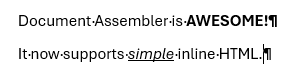

Inline HTML Support
Namespace: Clippit.Word
Introduction
Document Assembler now supports basic inline HTML tags and if these are found in your Content select then formatting will be placed directly on the run.
For example assuming you had an XML file with an HTML fragment such as:
<doc>
<fragment>
<p>Document Assembler is <b>AWESOME!</b></p>
<p>It now supports <u><i>simple</i></u> inline HTML.</p>
</fragment>
</doc>
And you had a Content tag in your template:
<Content Select="//fragment[1]" />
Then Document Assembler would render this in Word as:

Supported HTML tags
Currently the following HTML tags are supported.
Block Tags
Both div and p tags are supported for block level content. When Document Assembler finds either of these then it will treat them as an encapsulating paragraph.
Inline Tags
- Either
borstrongare supported for Bold - Either
ioremare support for Italic uis translated to Underlineawill create a clickable Hyperlink in Wordbrforces a new line
HTML Parsing
HTML parsing is provided using the HTML Agility Pack and is fairly forgiving. If you have HTML elements in use that are not supported Document Assembler will simply ignore them and process the rest of your content.
Usage in Templates
Inline HTML formatting is supported by default, you do not need to change your Content elements, you just need to pass valid HTML rather than text to them in the Select attribute.
Future Developments
Inline HTML support is in its infancy but it would make sense to add support for: